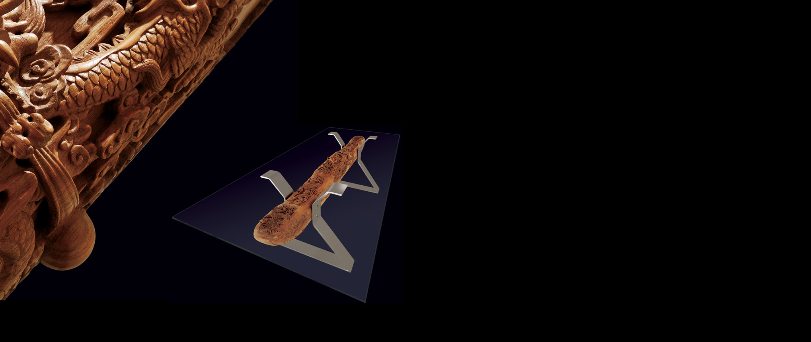
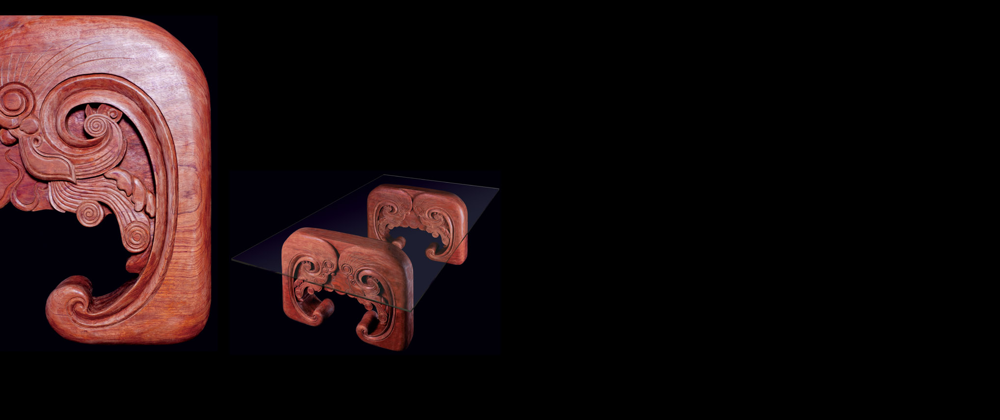
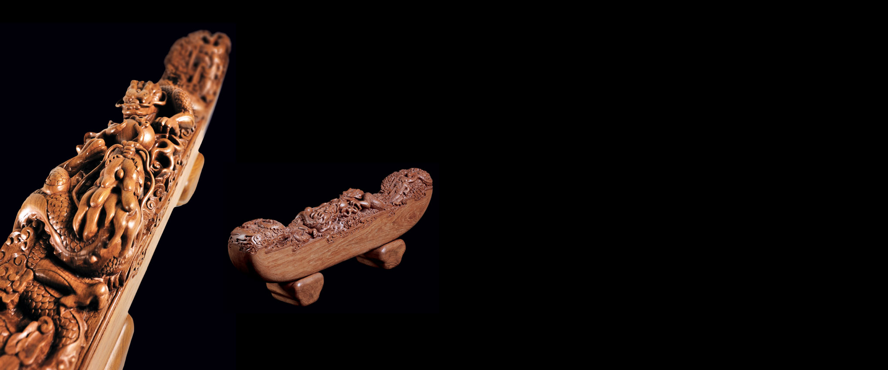

木作
-

[木梁桌Ⅰ]
取材于中国传统木构建筑中的“元宝梁”造型并加以变化，结合极简造型的不锈钢支撑，擎起巨大的超白玻璃台面。梁身采用整根150年龄的缅甸柚木为基，运用线刻、阴雕、浮雕、镂雕等手法，将五条形态各异、活灵活现的龙盘绕在整个梁身，或威严张扬、或含蓄深沉。端头用卷草纹加以修饰，侧面云纹环绕。现代材料的刚硬与锐利，结合传统木雕的婉转曲折，形成极具张力的对比。尺寸 W×D×H（mm）
1200×2400×780
材质
柚木花梨
-

[木梁桌Ⅱ·猫梁]
源自中国传统木构建筑中的“猫梁”造型，因其形似猫而得名。在中国古代民俗中，猫本有顺利招财之意，传统建筑往往把猫梁置于堂屋或中心建筑的主梁之上，既有结构造型方面的考虑，又寄托了屋宅主人祈福的心愿。木梁桌Ⅱ在借鉴传统风格基础上，加入飞扬活泼的现代气韵。桌面配以超白钢化玻璃，传统与现代元素自然对话，互相依存。尺寸 W×D×H（mm）
1200×2400×780
材质
柚木花梨
-

[元宝梁·双龙]
取徽派建筑的典型造型元素，以整块150年龄缅甸柚木纯手工雕刻而成。梁身上部以圆雕、浮雕、透雕等表现手法表现“双龙戏珠”纹样，双龙分布两端，英姿矫健、神态逼真，周围祥云缭绕，繁复精致的雕刻与简洁舒展的梁身形成鲜明对比，充分呈现了木之优雅、隽永的品格。尺寸 W×D×H（mm）
1200×2400×780
材质
柚木花梨